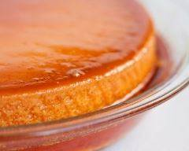

Entrée | Plat principal | Dessert |
 |
 | |
Tartine gratinée Pour 4 personnes. |
Gratinde pâtes Pour 4 personnes. |
Crème renversée pour 6 personnes. |
Nous sommes un petit groupe de bénévoles qui voulons aider les personnes ne sachant pas quoi faire pour le repas du soir.
Ce site permet de trouver des plats faciles qui sont appétissants sans prendre beaucoup de temps.
En espérant que ce site vous aidera à faire plaisir à vos papilles.